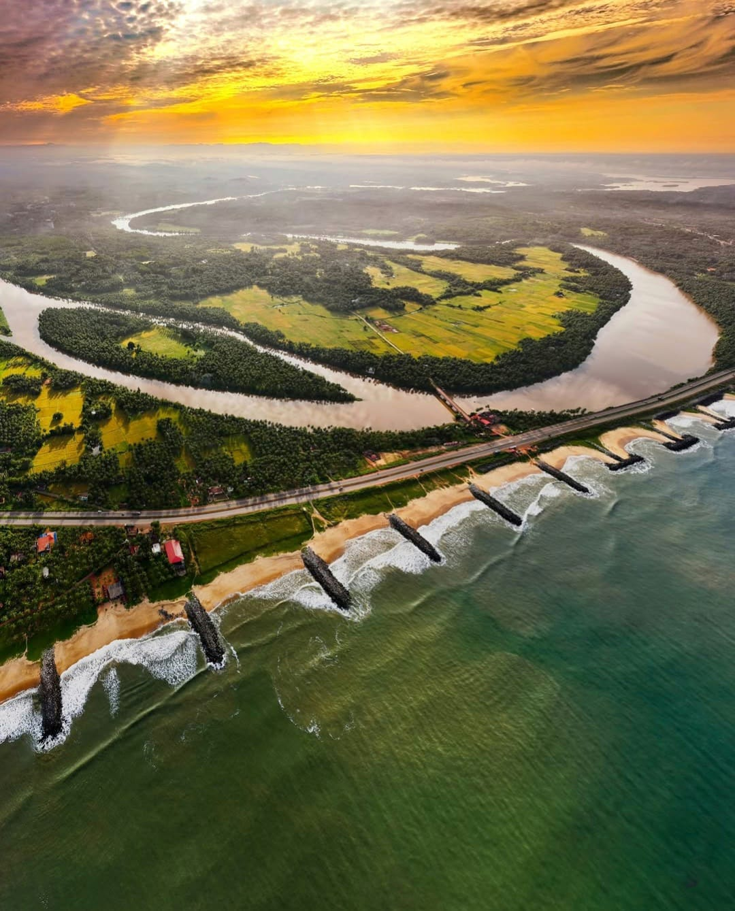

Maravanthe Beach: A Hidden Coastal Paradise Waiting to Be Discovered
Imagine a stretch of golden sands where the sound of crashing waves meets the whisper of the wind in the palms, a place where the Arabian Sea embraces the land on one side, while the majestic Kodachadri hills rise on the other. This is Maravanthe Beach, one of Karnataka's best-kept secrets, offering a unique, serene escape from the hustle and bustle of city life.
Nestled along the Konkan coast, just 50 km from Udupi and 35 km from Kundapura, Maravanthe Beach is not just any beach—it's a place where the road, the sea, and the mountains form a harmonious trio, creating a mesmerizing landscape that you won't find anywhere else. If you're looking for a quiet retreat that offers stunning beauty, exciting activities, and a sense of peaceful seclusion, Maravanthe should be at the top of your travel list.
Why Maravanthe Beach Is a Must-Visit Destination
What sets Maravanthe Beach apart from the more touristy coastal destinations is its untouched charm and its magical setting. Here, you can experience the best of both worlds: the vastness of the sea and the serenity of the hills, all from the comfort of a quiet, nearly deserted beach. The National Highway 66 runs parallel to the beach, with the road flanked by the sea on one side and the Kodachadri hills on the other—offering one of the most scenic drives you’ll ever take. It’s a coastal drive that feels like something out of a movie, with the open sea on one side and lush hills towering on the other.

Things to Do: Maravanthe Beach Awaits Your Adventure
While Maravanthe is perfect for unwinding, it also offers a wealth of experiences for the curious traveler. Whether you’re an adventure enthusiast, a nature lover, or someone who simply wants to enjoy the quiet, here’s a creative mix of activities to make your visit unforgettable:
Sunrise and Sunset Bliss: Start your day early with the magical sunrise at Maravanthe. The soft golden rays filtering through the sea mist paint the sky in hues of pink, orange, and gold—a photographer's dream. In the evening, witness one of the most picturesque sunsets you’ll ever see as the sun dips below the horizon, painting the sky in brilliant colors.
Unwind and Feel the Waves: The best thing to do here is to simply be. Maravanthe offers a peaceful escape where you can let go of the world around you. Stroll along the untouched beach, dip your toes in the cool waves, or just relax with the sound of the sea in the background. With so few people around, you can enjoy the beach's natural beauty in solitude.
Catch the Dolphins: Maravanthe is also known for its playful dolphins. Keep an eye out for these delightful creatures as they frolic in the Arabian Sea. There's something magical about watching dolphins leap from the water against the backdrop of the mountains—it's a memory you won’t soon forget.
Kayak into the Horizon: For those who crave adventure, kayaking is the perfect way to explore the waters of Maravanthe. Paddle through the calm sea, surrounded by lush greenery and the breathtaking mountains. The tranquility of the water combined with the raw beauty of the landscape makes this a truly immersive experience.
A Road Trip with a View: The drive along the National Highway 66 is, without a doubt, one of the highlights of visiting Maravanthe. It’s not just a way to get from one place to another, but a journey in itself. As you cruise along the coastline, the road hugs the beach on one side, offering constant glimpses of the shimmering blue waters, while the Kodachadri hills stand proudly on the other side, their slopes swathed in greenery. It’s a coastal road trip like no other.
Birdwatching in the Quietude: If you're a nature enthusiast, bring your binoculars. The region around Maravanthe is home to several bird species, both resident and migratory. The coastal wetlands attract a variety of birds, making it a perfect spot for birdwatching, particularly during the winter months.
How to Reach Maravanthe Beach: Your Gateway to Tranquility
Getting to Maravanthe Beach is easy, and the journey itself is a part of the adventure. The beach is well connected by road, rail, and air, making it accessible for all kinds of travelers.
By Road: The most scenic route to Maravanthe is along National Highway 66, which runs parallel to the beach. From Udupi (50 km away) or Kundapura (35 km away), you can take a taxi, rent a bike, or hop on a local bus to reach the beach. The drive is an experience in itself, with the Arabian Sea on one side and the Kodachadri hills on the other.
By Rail: The nearest railway station to Maravanthe is Kundapura (35 km away), which is connected to major cities like Mangalore and Udupi. From the station, you can take a taxi or bus to reach the beach.
By Air: Mangalore International Airport (120 km away) is the closest airport. You can hire a taxi from the airport to reach Maravanthe, or take a bus to Udupi and then head to Maravanthe.
Best Time to Visit Maravanthe: Embrace the Coastal Charm
The ideal time to visit Maravanthe is from November to February when the weather is cool and pleasant, perfect for beach activities and exploring the region. The monsoon season (June to September) transforms the landscape, with lush greenery all around, but it may be challenging for outdoor activities due to heavy rain. If you're a nature lover, the post-monsoon period is a fantastic time to visit as the area is lush and vibrant.
Stay Close to Nature: Where to Stay Near Maravanthe Beach
While Maravanthe may not have large resorts or luxury hotels, it’s the perfect place for those seeking a more rustic and tranquil stay. Whether you choose a cozy homestay or a beachfront cottage, you’ll be surrounded by the beauty of nature.
Beachside Cottages: Simple, eco-friendly beach cottages dot the area, offering the perfect base for those looking to stay close to the sea. Fall asleep to the sound of the waves and wake up to the salty breeze.
Homestays: Many families in the nearby villages offer homestay options, providing you with an opportunity to experience local culture and hospitality. You’ll enjoy authentic coastal cuisine, including seafood and traditional South Indian dishes.
Resorts in Udupi/Kundapura: For more comfort and amenities, head to the nearby towns of Udupi or Kundapura, where you can find a variety of mid-range to luxury resorts, guesthouses, and hotels.
Nearby Attractions: Beyond Maravanthe
While Maravanthe Beach itself is a peaceful haven, there are several attractions nearby that are worth exploring:
St. Mary's Island: A short boat ride from Malpe (30 km away), St. Mary's Island is famous for its unique hexagonal basalt rock formations. It’s the perfect day-trip destination for those who want to explore more of the coast.
Kudlu Theertha Waterfall: Located 18 km away, this hidden waterfall is a gem. With its cool, refreshing waters and serene surroundings, it’s a great spot to unwind.
Udupi Sri Krishna Temple: A must-visit for anyone in the region, this famous temple, dedicated to Lord Krishna, is an important pilgrimage site and is known for its historical and cultural significance.
Maravanthe Beach: Your Slice of Paradise
Maravanthe Beach is where the mountains meet the sea in a perfect dance of nature. With its breathtaking vistas, tranquil atmosphere, and minimal crowds, it offers a slice of paradise for those who seek to escape the noise of everyday life. Whether you’re here for a peaceful retreat, an adventure, or simply to soak in the beauty of nature, Maravanthe is sure to captivate your heart and soul. It's a destination that allows you to reconnect with the simple joys of life, offering an unforgettable coastal experience that stays with you long after you leave.